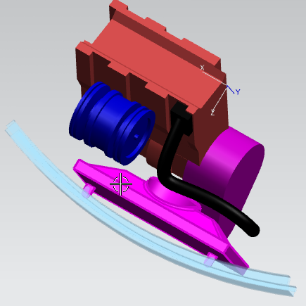
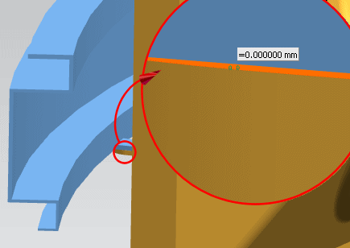
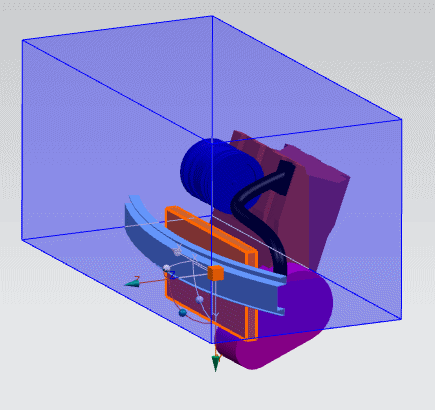

创建装配序列抽取路径
本例演示如何从汽车发动机舱装配中抽取黄色散热器，如下图所示。
有一个要求：必须从汽车上面抽取散热器而不是从汽车下面抽取。

-
在装配工具条上，单击装配序列
 。
。NX 将进入序列任务环境。
-
在装配序列工具条上，单击新建序列
 。
。 -
在序列工具工具条上，单击抽取路径
 。
。 -
在抽取路径对话框中，选择组件 处于活动状态时，选择要计算其抽取路径的组件。

如果序列中启用了约束，则会收到一条消息，确认如果继续，则将在序列中禁用约束。
-
在路径参数组中指定步长。
较小的步长值更容易创建成功的抽取路径，但处理时间较长。
-
指定间隙。
小的正间隙可确保部件在抽取期间不会接触或干涉抽取。在本例中，0.5 mm 的间隙就足够了。
-
指定部件移动的限制。
注意
如果要限制旋转，则建议您在指定起始位置之前先指定移动的限制。否则，起始位置计算可能包含意外的旋转和干涉。
-
在移动的限制组中，单击向 WCS 对齐
 ，将移动的限制框与装配的 WCS 对齐。
，将移动的限制框与装配的 WCS 对齐。 -
在平动下的“类型”列表中，选择限制质心。
-
为确保不从车下抽取散热器，可拖动相应手柄以限制该方向上的运动(如下图所示)，然后拖动一个合理区域，该区域中的部件可在其他轴上移动。

-
(可选)通过单击动画
 来确认运动的限制。
来确认运动的限制。
-
在旋转下的类型列表中，选择无限制。
-
在起始位置组中，单击显示位置 。
如果起始位置与其他组件太近，则会出现包含以下信息的警告。您可以：
-
单击自动解析
 。
。 -
单击指定位置
 并手工调整组件。
并手工调整组件。 -
更改路径参数，然后重试。
在本例中，散热器在两个弯边处接触保险杠。您将得到过于接近状态。

-
-
请在自动干涉解析下，指定最大距离，然后单击自动解析
。您会得到通知您结果的消息。在本例中，单击自动解析一次，便可移动散热器来提供两个弯边位置处间隙的大概间隙值。

接受抽取路径后，此初步运动是抽取路径序列步骤中的第一帧。
-
在目标位置下，单击指定位置
。 -
使用拖动手柄将组件移到目标位置。

-
在设置组中，选中显示计算结果复选框。
在单击生成结果时，会在稍后实现组件移动的动画。此动画不是必需的，而且会稍微降低性能；不过，您可以看到稍后会舍弃的试算位置。
-
在抽取路径中指定帧数。
较多帧数会创建平滑的动画，但会花费较长的播放时间。
-
单击生成结果
 。
。组件的初始移动可能很不规则，因为软件会尝试并舍弃各种可能的路径。实现的最终路径因设置的运动限制而异。
-
单击播放轨迹
 以预览解算方案路径。
以预览解算方案路径。